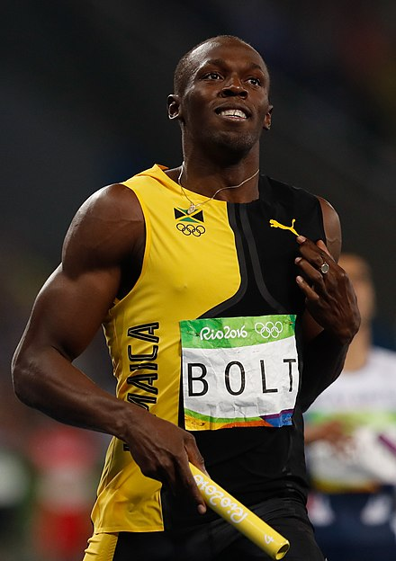

Usain Bolt
(born 21 August 1986)
is a Jamaican retired sprinter, widely considered to be the greatest
sprinter of all time. He is the world record holder in the 100 metres,
200 metres, and 4 × 100 metres relay.
An eight-time Olympic gold medallist, Bolt is the only sprinter to win Olympic 100 m and 200 m titles at three consecutive Olympics (2008, 2012, and 2016). He also won two 4 × 100 relay gold medals. He gained worldwide fame for his double sprint victory in world record times at the 2008 Beijing Olympics, which made him the first person to hold both records since fully automatic time became mandatory.
An eleven-time World Champion, he won consecutive World Championship 100 m, 200 m and 4 × 100 metres relay gold medals from 2009 to 2015, with the exception of a 100 m false start in 2011.
He is the most successful male athlete of the World Championships. Bolt is the first athlete to win four World Championship titles in the 200 m and is one of the most successful in the 100 m with three titles.
Bolt improved upon his second 100 m world record of 9.69 with 9.58 seconds in 2009 – the biggest improvement since the start of electronic timing. He has twice broken the 200 metres world record, setting 19.30 in 2008 and 19.19 in 2009.
He has helped Jamaica to three 4 × 100 metres relay world records, with the current record being 36.84 seconds set in 2012. Bolt's most successful event is the 200 m, with three Olympic and four World titles.
"Some people want it to happen, some wish it would happen, others make it happen." (Michael Jordan). Some people want it to happen, but Bolt makes it happen. Usain Bolt is by far the best sprinter shattering world records in 2008 Beijing China, 2012 London, and 2016 Rio Olympics. His world record times in the 100 meter and 200 meter make him the best sprinter. A hero must possess hard work and focus just like Bolt did to become who he is. Usain Bolt is more than just a sprinter his hard work to get where he is, his focus on a sport and inspiration make him a hero.
Bolt's success didn't just come from luck, it came from hard work that he dedicated to become the best. "Initially he was quite hard to work with, he needed to be kept in line ... nothing malicious, just pranks that got a bit out of hand, he certainly kept you on your toes" (Usain Bolt." Newsmakers). Despite the pranks Bolt pulled off on his coach he was an athlete that works hard to become the best. People never know what to expect out of him, working hard or goofing off. Despite trying to become the best with hard work athletes often deal with injury which slow them. "Despite a nagging hamstring injury, Bolt was chosen for the Jamaican Olympic Squad for the 2004 Athens Olympics. He was eliminated in the first round of the 200-meter, though, again hampered by injury" ("Usain Bolt." biography.com). With the injury Bolt was chosen for an Olympic squad and raced with an injury. Racing with an injury is hard work because the pain is only going to slow you down. Bolt's hard work for sprinting will be the beginning of a legacy.
“Train hard, turn up, run your best and the rest will take care of itself.”
- Usain Bolt